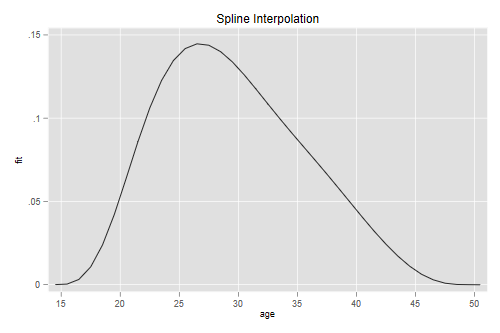

<h2 id="interpolation">Interpolation</h2>
<p>Splines can also be used for interpolation. Here we reproduce the
results in the article by Mc Neil, Trussell and Turner listed in the
readings. Their objective is to produce single-year fertility rates by
interpolating in a five-year schedule. This log is fairly technical and
you may wish to skip it unless you have an interpolation problem at
hand. The gist is that polynomials can be troublesome while splines are
better behaved.</p>

{% include srtabs.html %}

<h3 id="the-data">The Data</h3>
<p>The data represent cumulative fertility at ages 15(5)50, which we
will just type in</p>
<pre class='stata'>. clear

. mata: mtt = range(15,50,5), (0\ 0.080\ 0.593\ 1.297\ 1.840\ 2.171\ 2.296\ 2.30
> 6)

. getmata (age F) = mtt
</pre>
<pre class='r'>> mtt &lt;- data.frame(age = seq(15, 50, 5), 
+   F = c(0, 0.080, 0.593, 1.297, 1.840, 2.171, 2.296, 2.306))
</pre>
<h3 id="polynomial-interpolation">Polynomial Interpolation</h3>
<p>With 8 data points we can get an exact fit using a 7-th degree
polynomial. Let us reproduce Figure 1 in the article, showing that
polynomials don't work very well in this case. <span class="stata">We
need age^2 to age^7.</span><span class="r">R can build orthogonal
polynomials for us.</span>Because the fit is exact the residual sum of
squares is 0 and the standard errors are undefined, so we will not print
the results.</p>
<pre class='stata'>. forvalues p=2/7 {
  2.   gen age`p' = age^`p'
  3. }

. quietly regress F age age2-age7
</pre>
<pre class='r'>> pf &lt;- lm(F ~ poly(age, 7), data=mtt)
</pre>
<p>To do the interpolation we predict on a new dataset representing
exact ages 14 to 51 (or try a slightly wider range to see how much worse
it gets :)</p>
<pre class='stata'>. drop _all

. set obs 38
Number of observations (_N) was 0, now 38.

. gen age = 13 + _n

. forvalues p=2/7 {
  2.   gen age`p' = age^`p'
  3. }

. predict Fit
(option xb assumed; fitted values)
</pre>
<pre class='r'>> library(dplyr)
> df &lt;- data.frame(age = 14:51)
> df &lt;- mutate(df, Fit = predict(pf, newdata=df))
</pre>
<p>Now that we have cumulative fertility at every age between 14 and 51
we can difference to obtain age-specific fertility rates centered at the
midpoints of each year of age</p>
<pre class='stata'>. gen fit = Fit - Fit[_n-1]
(1 missing value generated)

. gen agem = (age + age[_n-1])/2
(1 missing value generated)

. line fit agem, xtitle(age) xlabel(15(5)50) title(Polynomial Interpolation)

. graph export iasfrp.png, width(500) replace
file iasfrp.png saved as PNG format
</pre>
<p></p>
<pre class='r'>> library(ggplot2)
> dfd &lt;- data.frame( age = df$age[-1] - 0.5, fit = diff(df$Fit))
> ggplot(dfd, aes(age, fit)) + geom_line() + ggtitle("Polynomial Interpolation")
> ggsave("iasfrpr.png", width=500/72, height=400/72, dpi=72)
</pre>
<p></p>
<p>Obviously the polynomial is not well behaved at the extremes. This
type of result is not unusual with polynomials.</p>
<h3 id="restricted-splines">Restricted Splines</h3>
<p>McNeil et al. use a spline of degree five with internal knots at ages
20(5)45 and restricted to have zero first and second derivatives at ages
15 and 50 in order to ensure good behavior in the tails. The 5th degree
polynomial has 6 parameters, the knots add 6, and the restrictions
subtract 4, for a total of 8; exactly the same as the polynomial.</p>
<p>The article shows how to set up a system of linear equations to
compute the coefficients, which can also be done via regression. To
check our results against the paper we will rescale age so we work with
0(1)7 instead of 15(5)50.</p>
<p>This time the data will have 12 rows, 8 for cumulative fertility and
four for the constraints</p>
<pre class='stata'>. clear

. mata: mttx = (mtt[,1]\15\50\15\50), (mtt[,2]\J(4,1,0))

. getmata (age F ) = mttx
</pre>
<pre class='r'>> mttx &lt;- rbind(mtt, data.frame(age = c(15, 50, 15, 50), F = rep(0, 4)))
</pre>
<p>Next we create the terms involving the powers and knots</p>
<pre class='stata'>. gen one = 1

. replace one = 0 in 9/12
(4 real changes made)

. // powers
. gen a = (age - 15)/5

. forvalues p=2/5 {
  2.   gen a`p' = a^`p'
  3.   quietly replace a`p' = `p' *  a^(`p' - 1) in 9/10                  
  4.   // 1st der
.   quietly replace a`p' = `p' * (`p' - 1) * a^(`p' - 2) in 11/12  
  5.   // 2nd der
. }

. // knots
. forvalues i=1/6 {
  2.   gen knot`i' =             cond(a > `i',    (a - `i')^5, 0)
  3.   quietly replace knot`i' = cond(a > `i',  5*(a - `i')^4, 0) in  9/10
  4.   // 1st
.   quietly replace knot`i' = cond(a > `i', 20*(a - `i')^3, 0) in 11/12
  5.   // 2nd
. }

. replace a = 1 in  9/10
(2 real changes made)

. replace a = 0 in 11/12
(1 real change made)
</pre>
<pre class='r'>> d0 &lt;- 1:8; d1 &lt;- 9:10; d2 &lt;- 11:12 # location of data and constraints
> mttx[d0,       "one"] &lt;- 1
> mttx[c(d1,d2), "one"] &lt;- 0
> # powers
> a &lt;- (mttx$age - 15)/5 # for short
> for(p in 2:5) {
+   ap &lt;- paste("a", p, sep="")
+   mttx[d0, ap] &lt;- a[d0]^p
+   mttx[d1, ap] &lt;- p * a[d1]^(p-1)
+   mttx[d2, ap] &lt;- p * (p-1) * a[d2]^(p-2)
+ }
> # knots
> for(i in 1:6) {
+   ki &lt;- paste("k", i, sep="")
+   mttx[d0, ki] &lt;- ifelse(a[d0] > i,    (a[d0] - i)^5, 0)
+   mttx[d1, ki] &lt;- ifelse(a[d1] > i,  5*(a[d1] - i)^4, 0)
+   mttx[d2, ki] &lt;- ifelse(a[d2] > i, 20*(a[d2] - i)^3, 0)
+ }
> mttx[   ,"a"] &lt;- a
> mttx[d1, "a"] &lt;- 1
> mttx[d2, "a"] &lt;- 0
</pre>
<p>You should probably list the data to have a look at the structure. To
get the coefficients <span class="stata">we run a regression. The fit is
perfect so we suppress detailed results.</span><span class="r">we use
<code>solve()</code>, but could use <code>lm()</code> as
well.</span></p>
<pre class='stata'>. quietly regress F one a a2-a5 knot*, noconstant

. set linesize 80

. mat list e(b)

e(b)[1,12]
           one           a          a2          a3          a4          a5
y1   1.853e-10   2.042e-10   4.158e-11   .02094163   .09502961  -.03597124

         knot1       knot2       knot3       knot4       knot5       knot6
y1   .05607291  -.01914399  -.00640362   .00816153  -.00289059  -.00586751
</pre>
<pre class='r'>> X &lt;- mttx[,c(3,14,4:13)]  # one, a, a2-a5, k1-k6
> b &lt;- solve(X, mttx$F); b      
          one             a            a2            a3            a4 
 0.000000e+00  4.324583e-15 -1.694940e-14  2.094161e-02  9.502964e-02 
           a5            k1            k2            k3            k4 
-3.597125e-02  5.607293e-02 -1.914401e-02 -6.403600e-03  8.161524e-03 
           k5            k6 
-2.890595e-03 -5.867494e-03 
</pre>
<p>The coefficients are exactly the same as in the paper (see page 252),
with the first three rounded to zero. Next we need a prediction dataset
in single years, with the power and knot terms but not the
derivatives.</p>
<pre class='stata'>. drop _all

. set obs 38
Number of observations (_N) was 0, now 38.

. gen one = 1

. gen age = 13 + _n

. gen a = (age - 15)/5

. forvalues p=2/5 {
  2.   gen a`p' = a^`p'
  3. }

. forvalues i=1/6 {
  2.   gen knot`i' = cond(a > `i', (a - `i')^5, 0)
  3. }

. predict Fit
(option xb assumed; fitted values)
</pre>
<pre class='r'>> nd &lt;- data.frame(age = 14:51) |> mutate(one = 1, a = (age-15)/5)
> for (p in 2:5) {
+   ap = paste("a", p, sep="")
+   nd[, ap] = nd$a^p
+ }
> for (i in 1:6) {
+   ki &lt;- paste("k", i, sep="")
+   nd[, ki] &lt;- ifelse(nd$a > i, (nd$a - i)^5, 0)
+ }
> Fit = as.matrix(nd[, -1]) %*% b
</pre>
<p>Which we then difference and plot</p>
<pre class='stata'>. gen fit = Fit - Fit[_n-1]
(1 missing value generated)

. gen agem = (age + age[_n-1])/2
(1 missing value generated)

. line fit agem, xtitle(age) xlabel(15(5)50) title(Spline Interpolation)

. graph export iasfrs.png, width(500) replace
file iasfrs.png saved as PNG format
</pre>
<p></p>
<pre class='r'>> nd = data.frame(age = 14:50 + 0.5, fit = diff(Fit))
> ggplot(nd, aes(age, fit)) + geom_line() + ggtitle("Spline Interpolation")
> ggsave("iasfrsr.png", width=500/72, height=400/72, dpi=72)
</pre>
<p></p>
<p>Obviously the restricted spline is much better behaved at the
extremes!</p>
